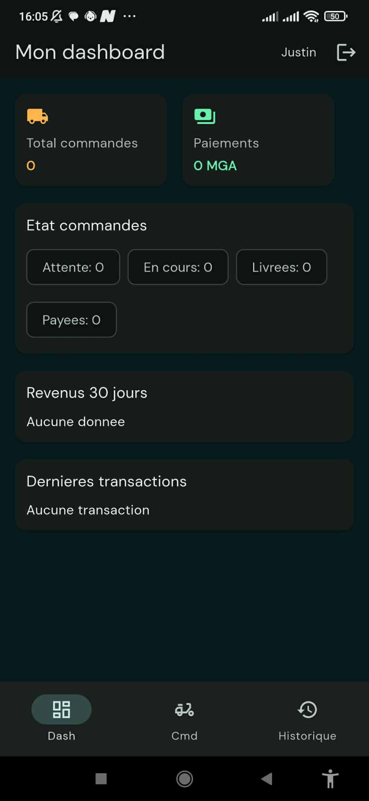
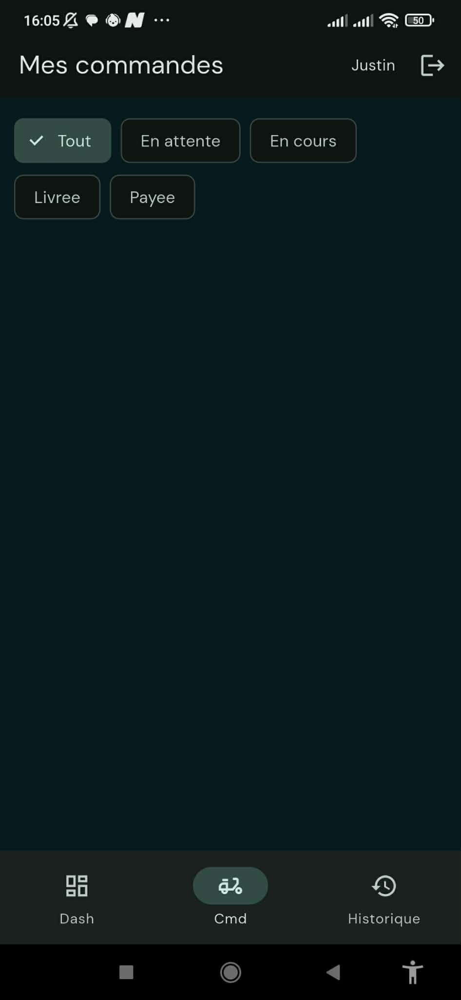
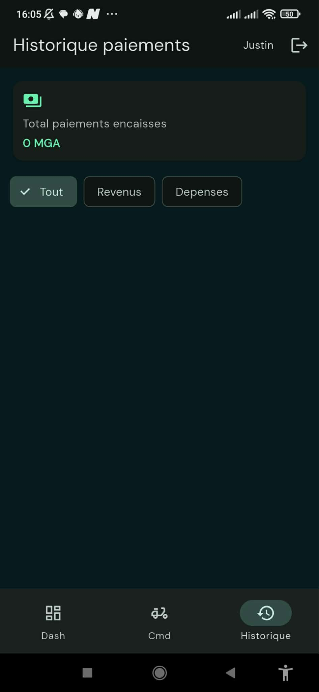
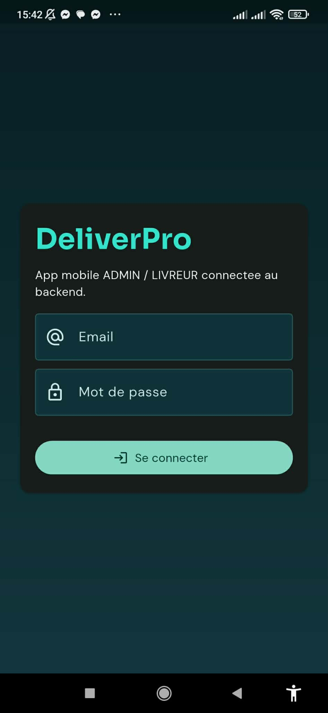
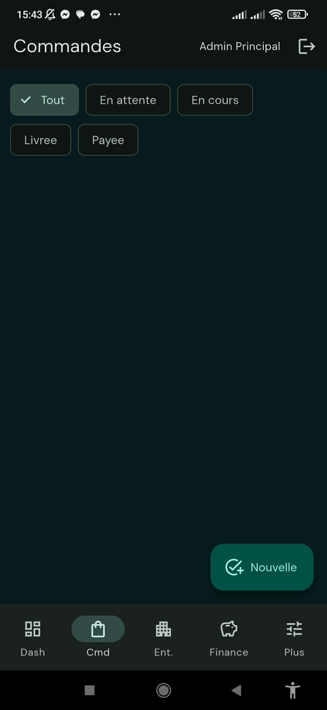
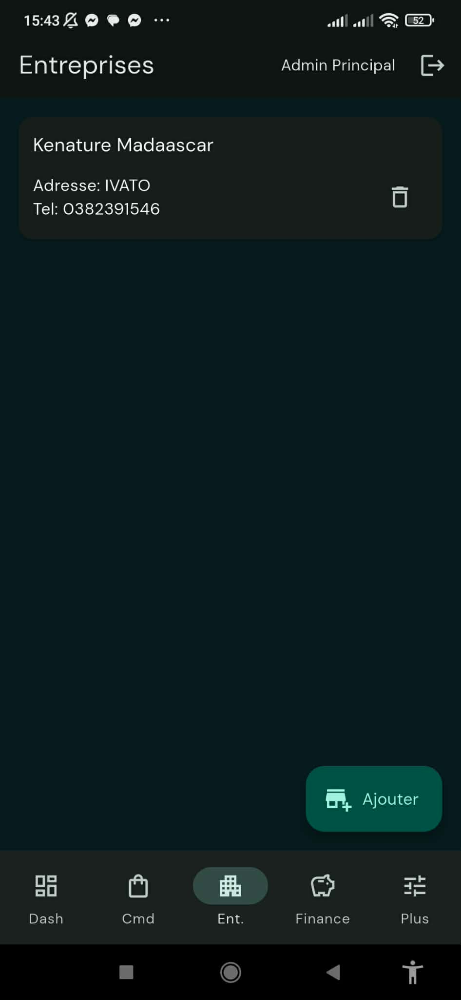
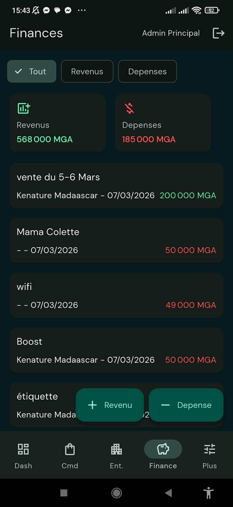
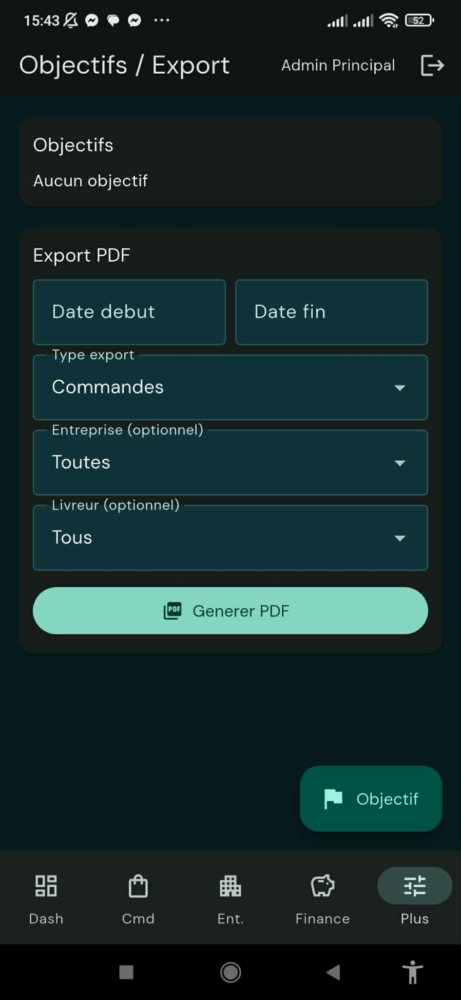

Defi
Centraliser les operations quotidiennes et les indicateurs financiers, puis partager la meme logique metier entre poste admin et usage mobile.
RAKOTOMALALA Fenotiana Michael
ME CONTACTERUne plateforme composee d'un back-office desktop, d'une API metier et d'une application Flutter pour centraliser les commandes, les utilisateurs, les entreprises partenaires et les finances.
Contexte
DeliverPro a ete concu pour repondre a un besoin metier concret : suivre une activite de livraison depuis une seule interface, sans alterner entre plusieurs tableaux, fichiers ou espaces de travail. L'objectif etait de donner a l'administrateur une vision claire de l'activite, tout en fournissant une API metier exploitable et une application mobile pour les parcours admin et livreur.
Centraliser les operations quotidiennes et les indicateurs financiers, puis partager la meme logique metier entre poste admin et usage mobile.
Un back-office React + Electron pour l'administration, une API Django REST securisee par JWT et une application Flutter pour les parcours admin et livreur.
Les commandes, les utilisateurs, les entreprises et les finances sont regroupes dans un meme ecosysteme de travail, du back-office jusqu'au livreur.
React, Vite, Electron, Django, Django REST Framework, PostgreSQL, Flutter, JWT et packaging Windows.
DeliverPro n'est pas seulement une interface d'administration. Le projet a ete pense comme une base produit complete, avec trois briques reliees par la meme API.
Le back-office React + Electron sert a gerer les commandes, les entreprises, les utilisateurs, les finances et les exports PDF depuis un poste fixe.
L'API REST centralise l'authentification JWT, les regles de gestion, les dashboards, les transactions, les objectifs, les exports et les donnees partagees par tous les clients.
L'application mobile Flutter couvre les parcours admin et livreur, avec connexion securisee, suivi des commandes, finances, entreprises et operations rapides depuis smartphone.
Le desktop admin et le mobile utilisent le meme backend pour garder des donnees coherentes, synchroniser l'operationnel et eviter les doubles saisies.
Backend
Le backend DeliverPro a ete developpe avec Django et Django REST Framework pour servir de couche metier unique entre le back-office desktop React + Electron et l'application Flutter. C'est lui qui porte la logique centrale du produit : droits d'acces, donnees PostgreSQL, calculs financiers, dashboards, historique, export PDF et exposition des ressources metier.
Connexion JWT avec access token et refresh token, logout, profil utilisateur, changement de mot de passe et permissions distinctes pour les roles admin et livreur.
CRUD des utilisateurs, entreprises, commandes, transactions, objectifs et journaux d'audit, avec filtres, pagination et relations coherentes entre les entites.
Dashboards admin et livreur, alertes budgetaires, paiements, export PDF, statistiques par entreprise et automatisations metier reliees au cycle de livraison.
Documentation Swagger, tests API sur les cas critiques, configuration de deploiement, CORS, WebSocket temps reel et backend exploitable par plusieurs clients, desktop comme mobile.
/api/auth/login/
Point d'entree pour l'authentification JWT et l'ouverture de session metier.
/api/dashboard/
Dashboard global admin avec synthese des revenus, depenses, commandes et indicateurs.
/api/dashboard/livreur/
Vue ciblee pour le terrain, adaptee au role livreur et a ses propres commandes.
/api/commandes/
Gestion complete des commandes, progression des statuts et suivi du cycle de livraison.
/api/transactions/
Journal financier, revenus, depenses et historique exploitable pour les modules finance.
/api/export/pdf/
Generation de rapports filtres par periode, entreprise, livreur et type de contenu.
Ce projet montre ma capacite a concevoir une vraie interface metier : un outil qui ne se contente pas d'etre visuel, mais qui sert au pilotage quotidien d'une activite. L'application transforme des donnees operationnelles en informations directement exploitables, avec une interface admin lisible, une API reutilisable et un usage mobile pense pour l'efficacite sur le terrain.
Le back-office a ete pense comme un outil de bureau moderne, avec une interface sombre, une navigation laterale claire et des ecrans specialises pour chaque besoin metier.


Flutter
En plus du poste admin desktop, DeliverPro dispose d'une interface mobile Flutter connectee au meme backend Django REST. Les captures ci-dessous montrent la declinaison smartphone du produit, avec une navigation rapide, des actions metier directes et des modules adaptes a l'usage mobile.
Mode livreur
Le parcours livreur donne une lecture immediate des commandes assignees, des statuts de livraison et des paiements encaisses, avec une interface simple a utiliser sur le terrain.



Mode admin
L'application admin mobile reutilise le meme backend Django REST pour administrer les commandes, les entreprises partenaires, les finances et les exports, sans dependre du poste desktop.





Parlons de votre projet

Besoin d'un site web, d'une interface de gestion ou d'une application simple a utiliser ? Je peux vous aider a cadrer le besoin puis a realiser une solution concrete.
Contactez-moi par email ou directement par telephone au +261 37 78 17 771.